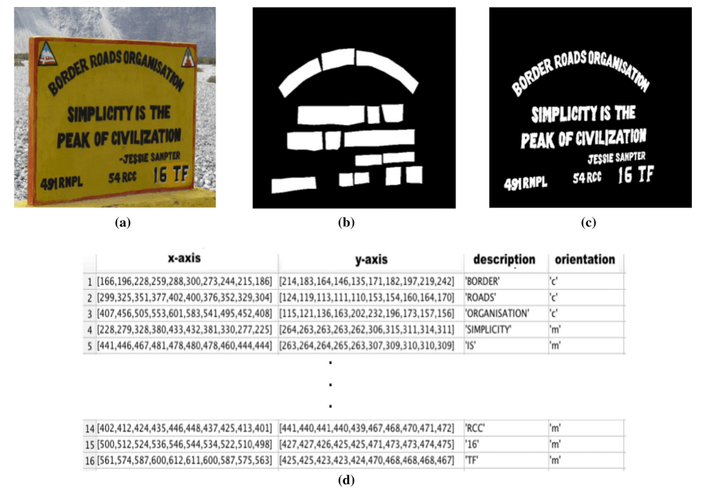
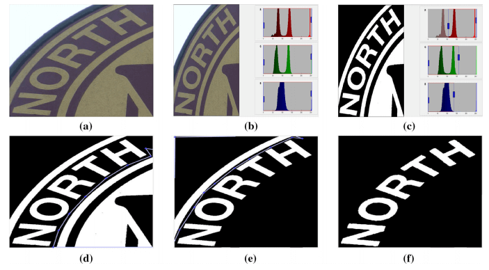
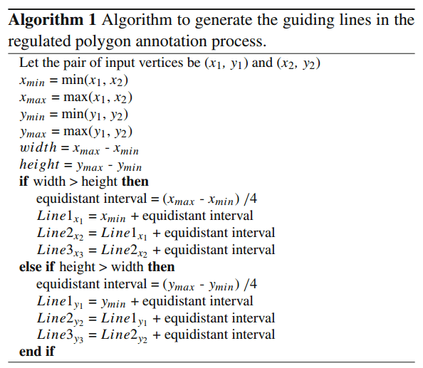
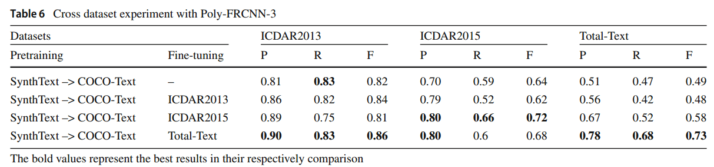
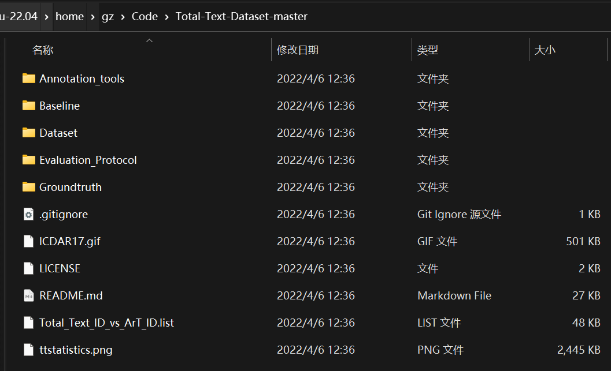
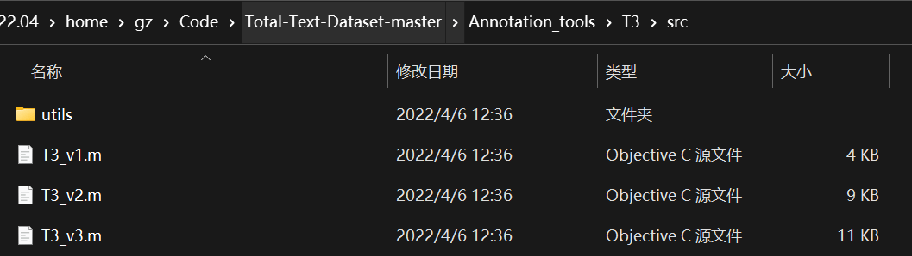
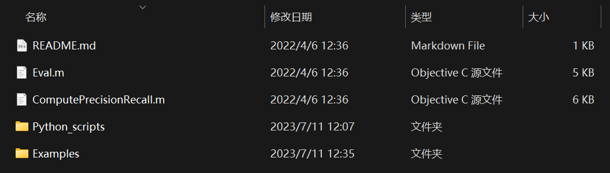
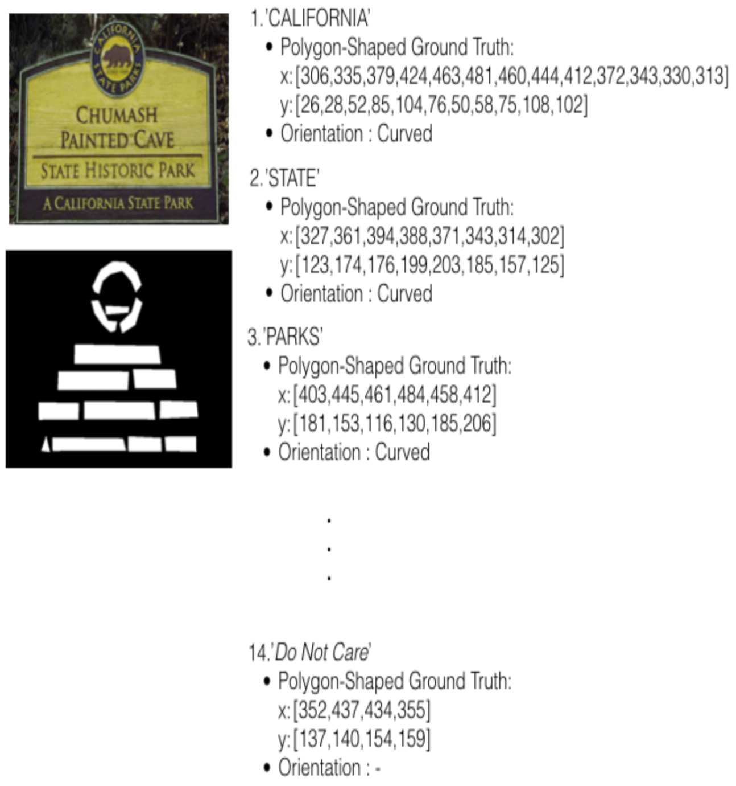

Paper-TotalText
目录
- 资源
- Total-Text: A Comprehensive Dataset for Scene Text Detection and Recognition
- Total-Text: toward orientation robustness in scene text detection
- Abstract
- 1 Introduction
- 2 Related works
- 3 The Total-Text dataset
- 4 Evaluation protocol
- 5 Scene text detection annotation tool
- 6 Polygon-faster-RCNN
- 7 Conclusion
- 代码
资源
- PaperWithCode：Total-Text Dataset | Papers With Code
- Arxiv：[1710.10400v1] Total-Text: A Comprehensive Dataset for Scene Text Detection and Recognition (arxiv.org)
- GitHub：cs-chan/Total-Text-Dataset: Total Text Dataset. It consists of 1555 images with more than 3 different text orientations: Horizontal, Multi-Oriented, and Curved, one of a kind. (github.com)
- 文中附带的 Text Detection 的方法：Total-Text: toward orientation robustness in scene text detection (cs-chan.com)
包含两个任务：
- Text Spotting：Total-Text Benchmark (Text Spotting) | Papers With Code
- Scene Text Detection on Total-Text：Total-Text Benchmark (Scene Text Detection) | Papers With Code
Total-Text: A Comprehensive Dataset for Scene Text Detection and Recognition
Abstract
弯曲文本在常见的文本数据集中（ICDAR’13 和 MSRA-TD500）几乎不存在，TotalText 数据集则有。最近，一种将文本检测作为分割问题的新解决方案已经证明了它们对多方向文本的有效性。
1 INTRODUCTION
市面上几乎没有弯曲文本的数据集，CUTE80 是唯一可用的，然而它只有 80 张，不好使。
如果没有合适的数据集，解决弯曲文本检测问题的努力就很少出现。
Total Text：
- 一个考虑到弯曲文本的场景文本数据集，填补了场景文本数据集中文本方向的空白
- 1555 幅场景图像，4265 个文本实例，9330 个注释单词
- 三种不同的文本方向，包括水平 horizontal、多向 multi-oriented 和弯曲 curved。
第二行是 Total-Text，具有弯曲文本
A. Scene Text Datasets
ICDARs 系列，几百到几千张图像数量不等，文本质量模糊。
MSRA-TD500 于 2012 年推出，旨在解决场景文本数据集中缺乏任意定向文本的问题。它有 300 个训练图像和 200 个测试图像；用最小面积矩形标注。
COCO-Text 于 2016 年退出，数据量大（63686 张图像和 173589 个文本标记区域），也包含水平 horizontal、多向 multi-oriented 和弯曲 curved，然而它的 Ground Truth 只有 bbox，这只对水平和垂直文本有效。
CUTE80 只有 80 张，数据量太小了。
B. Scene Text Detection
介绍各种 Scene Text Detection 的模型，略。
3 TOTAL-TEXT DATASET
A. Dataset Attributes
弯曲文本是一个被忽视的问题 Curved text is an overlooked problem 在水平文本 ICDAR 中，性能几乎已达饱和（f-score 达到 0.9）
**弯曲文本观察 Curved text observation 从几何角度讲，直线沿着直线没有角度变化，因此可以描述为线性函数，y=mx+c 。而曲线不是直线。它在整个线路上不受角度变化的限制。
方向假设 Orientation assumption 目前很多 Text Detection 模型都具有方向假设，这种方式估计放到弯曲文本就寄了。
以聚焦的场景文本为起点 Focused scene text as a start ICDAR 系列的文本显示质量差，作者认为文本质量稍微好一点更适合启动相关研究工作。
GT 越完备越好 Tighter groundtruth is better ICDAR 2015 使用四边形（四个点），COCO使用 bbox（两个点）。在 Total Text 中，我们用紧密贴合的多边形对文本区域进行了注释。
评估协议 Evaluation Protocol 与 ICDAR 数据集一样，TotalText 使用 DetEval。
注释详细信息 Annotation Details 仍然保留了 bbox 的注释。Total Text 只考虑自然图像中的英文字符；其他语言、数字水印和无法阅读的文本被贴上了 “do not care” 的标签。
B. Dataset Statstics
- 数量优势 Strength in numbers 它总共有 9330 个注释文本，平均每个图像有 6 个实例。Total Text中超过一半的图像具有 2 个不同的方向及以上，平均每个图像产生 1.8 个方向。数据集的收集也考虑了

方向多样性 Orientation diversity 大约一半的是弯曲的：
- Horizontal Curve 水平弯曲 57.1%
- Vertical Curve 垂直弯曲 23.5%
- Circular 圆形 17.3%
- Wavy 波浪形 2%
弯曲文本通常与水平文本或多方向文本一起出现。图像中方向的混合对文本检测算法在文本方向方面实现鲁棒性和泛化提出了挑战。
- 场景多样性 Scene diversity 弯曲文本出现的场景多样性好。
4 SEMANTIC SEGMENTATION FOR TEXT DETECTION 用于文本检测的语义分割
A. DeconvNet
介绍他们提出的 DecovNet。使用最大的场景文本数据集 COCO-text 对其进行了预训练。COCO-text 中的图像被分为可阅读和难以阅读的文本，我们只在可阅读的文本上训练我们的网络，因为它与我们的数据集非常相似。
B. Experiments
| Dataset | Recall | Precision | F-score |
|---|---|---|---|
| Total-Text | 0.33 | 0.40 | 0.36 |
Total-Text: toward orientation robustness in scene text detection
Abstract
目前场景文本数据集中的文本方向还不够多样化。
提出的 Total-Text 具有三种不同的文本方向：
- 水平 horizontal
- 多方向 multi-oriented
- 曲线方向 curve-oriented
研究了其他几个重要因素：
- ground truth 的 practicality（实用性） 和 quality（质量）
- evaluation protocol 评估协议
- annotation process 注释过程
提出了一个新的场景文本检测模型作为 Total text 基线，称为 Polygon-Faster-RCNN
1 Introduction

提出的 Total-Text 包含：
- 1555 幅场景图像， 11459 个注释单词
- GT 包括：
- spatial location 空间位置
- transcription 标注
- pixel level for text detection, recognition and segmentation task 像素级的用于文本检测、识别和分割任务
提出了新的场景文本模型：Polygon Faster RCNN（Poly FRCNN）。用于回归多边形而不是长方体参数。它能够检测所有方向的文本，并以精确的方式将其绑定。我们提出的模型在 ICDAR2013、ICDAR2015 和 Total Text 上的 F 测度分别达到 0.85、0.72 和 0.7；证明了其在具有不同属性的数据集上的有效性。
1.1 Improved ground truth
多边形顶点的数量因文本实例的不同而不同。这给 Faster RCNN、SSD 和 YOLO 等检测框架带来了一个实际问题（所有这些都激发了许多场景文本检测工作），它们需要在回归目标中有固定数量的顶点。
1.2 Optimized evaluation protocol for Total-Text
DetEval 中当前推荐的阈值没有通过包含弯曲文本进行优化。进行了一系列实验，以确定一组新的更公平评估阈值。
1.3 Scene text detection annotation tool
在扩展数据集时，地面实况注释是最大的瓶颈。Karatzas 等人介绍了一个注重质量控制和数据库管理的在线注释平台。然而，仅仅是平凡而艰苦的注释任务就有很大的改进空间。因此，我们在第节中介绍了全文工具（T3）。5、一种辅助注释框架，该辅助注释框架能够减少注释时间，同时获得高质量的基本事实。
1.4 Cross dataset experiment
在 Total Text 上训练的模型在其他场景文本数据集上表现出良好的泛化能力
1.5 State-of-the-art analysis
自 TotalText 出现以来，许多工作开始解决弯曲文本检测问题。
2.1 Scene text datasets
2.1.1 ICDAR2003-ICDAR2015
| 系列 | 数量 | 注释 | 特性 |
|---|---|---|---|
| 2003 | 509 | bbox | |
| 2011 | 484 | bbox | |
| 2013 | 462 | bbox | |
| 2015 | 1670 | 四边形 | 包含任意方向，失焦 |
2.1.2 MSRA-TD500
2012，包含任意定向文本，300 训练图像，200 测试图像，使用旋转的边界框进行注释。
2.1.3 USTB-SV1K
从美国六个城市的街道上收集了 1000 张图像，以多方向文本为特色，用旋转的边界框进行注释。
2.1.4 COCO-text
2016，迄今为止最大的场景文本数据集，拥有 63686 幅图像和 173589 个标记文本区域。它主要由横向和多向文本以及少量弯曲文本组成，bbox。
2.1.5 MLT
MLT 数据集，这是为场景文本检测、识别和脚本识别任务收集的最新多脚本数据集之一。它由 18000 个图像组成，用于训练和验证，以 9 种语言和 6 种不同的脚本为特色。
2.1.6 CTW-12k
2017，12000 多张，中英文。
2.1.7 MTWI
迄今为止最大的多语言数据集之一，拥有 20000 张图像。
2.1.8 SynthText
包含 80 万个场景文本图像。它的注释由单词级和字符级轴对齐的边界框及其转录组成。它的缺点是，它使用了与 COCO 文本类似的轴对齐的边界框，这不适合多方向的文本。
2.1.9 CUTE80
第一个突出弯曲文本的场景文本数据集，可惜只有 80 张。
2.1.10 CTW1500
原则上是最接近 Total Text 的数据集。Total Text 的文本实例在单词级别进行注释，而 CTW1500 的文本实例则在行级别进行注释。
2.2 Scene text detection
2.2.1 Scene text inspired handcrafted feature era
场景文本的手工特征时代。
2.2.2 The emergence of CNN
CNN 的出现。
2.2.3 Segmentation-based scene text detection
基于分割的场景文本检测。
2.2.4 Proposal-based scene text detection
基于提示的场景文本检测。
2.2.5 Single network scene text detection
单网络场景文本检测。
2.2.6 Curved text detection
曲线文本检测。
3 The Total-Text dataset
3.1 Dataset attributes
3.1.1 Curved text is an overlooked problem
水平文本的检测性能几乎达到饱和（F-score 为 0.9），但是缺乏弯曲文本。
3.1.2 Curved text observation
曲线不是直线。它在整个线路上不受角度变化的限制。
3.1.3 Detection ground truth annotation
Total Text 中的文本实例是以单词级别的粒度进行注释的。
3.1.4 Recognition ground truth annotation
提供了单词 recognition 挑战的 GT。
3.1.5 Segmentation ground truth annotation
像素级的 GT 标注是最耗时的过程，我们提供了多种预处理方案。

3.1.6 Orientation annotation
具体来说，注释是这样表示的：
- ‘h’ 表示水平文本
- ‘m’ 表示多向文本
- ‘c’ 表示弯曲文本
3.1.7 Regulated polygon ground truth
在本文中，我们使用以下方案对全文注释进行了改进。除了将多边形顶点的数量设置为 10（根据经验，10 个顶点足以紧密覆盖我们数据集中的所有单词级文本实例）
新的多边形地面实况注释步骤如图 7 所示。首先，需要人工注释器手动选择四个不同的顶点，作为单词实例的开始和结束顶点。单词“MARLEY”（红点和绿点）上角的两个顶点将用于生成三条等距的黄色引导线。生成引导线的算法在算法 1 中进行了说明。然后，人类注释者将沿着每条黄色引导线选择一个截取点（表示为“*”），该点最能绑定单词的顶部边界。
算法1 在调节多边形注释过程中生成引导线的算法，emmmm就是给个上界和下界生成三等分的点，这样文字的四个角和三条三等分的线就可以形成 10 个顶点。

3.2 Dataset statistics
3.2.1 Strength in numbers
Total Text 分为两组：训练集和测试集，分别有 1255 张和 300 张图像。图 10 显示了 Total Text 的一系列统计信息。它总共有 11459 个带注释的文本实例，平均每个图像有7.37个实例。Total Text 中超过一半的图像具有两个不同的方向及以上，平均每个图像产生1.8个方向。
数据集的收集也考虑到了质量，包括场景复杂性。例如类似文本和低对比度背景，不同的字体类型和大小。
3.2.2 Orientation diversity
大约一半的文本实例是弯曲的，另一半在水平和多向之间几乎相等地划分。尽管所有图像都是在考虑弯曲文本的情况下收集的，但其他方向仍然占据了总实例的一半。仔细观察 Total Text 可以发现，弯曲文本通常与水平文本或多方向文本一起出现。图像中文本方向的混合对文本检测算法在文本方向方面实现鲁棒性和泛化提出了挑战。
3.2.3 Scenery diversity
Total Text 图像中的风景也很多样化。
4 Evaluation protocol
4.1 DetEval
Total Text 首次引入 DetEval 评估协议。然而，我们意识到，建议的 tp 和 tr 阈值，分别为 0.4 和 0.8，并没有通过在 Total text 中包含弯曲文本和多边形地面实况进行优化。
4.2 PASCAL VOC
与 CTW1500 和 ICDAR2015 类似，PASCAL VOC 评估方法也适用于 Total Text。
4.3 Intersection area between polygons
预测区域和地面实况区域之间的交集计算是 DetEval 和 Pascal VOC 评估协议的核心。
5 Scene text detection annotation tool
提出了一个注释工具：Total Text tool（T3），能够将注释时间减少 25%，与人类注释者的一致率为 84%。
5.1 Total-Text-Tool
5.2 Experiment setup
5.3 Performance analysis
6 Polygon-faster-RCNN
6.1 Text line encoding method
Faster RCNN、SSD和YOLO中使用的传统回归目标 $(x_m，y_m，w，h)$ 只能用于轴对称矩形框，而不能用于多边形。
6.1.1 Variants of Poly-FRCNN
Poly-FRCNN-5 是 3 的放大版，它在回归头中又有 10 个参数
6.1.2 Encode
6.1.3 Decode
6.2 Anchor polygons parameterization
6.3 Implementation details
6.3.1 Feature extractor
模型采用 Inception-Resnet-V2 作为特征提取器。
6.3.2 Anchor boxes
6.3.3 Loss function
6.3.4 Training
所有的 models 都经过了相同的训练计划。
它们首先使用 ImageNet pre-trained 的权重进行初始化。
然后，训练计划从 SynthText 上的 100 K 次迭代开始，然后是来自 COCO Text 的真实世界数据上的另外 100 K 次重复。最后，我们使用目标训练集对它们进行了 fine tune，以进行另外 50 K 次迭代。
该训练计划中最大数据集（SynthText）的初始学习率设置为0.003，然后自COCO Text训练开始以来降低了0.0003，并在其余训练中保持不变。
来自 SynthText 的 100K 图像被随机选择用于训练的第一阶段。
然后，在第二训练阶段期间使用来自具有至少一个可阅读文本实例的 COCO-Text 的大约 13K 个训练图像。
最后，来自总文本训练集的 1255 幅图像被用于 fine-tuning 阶段。
6.3.5 Testing
这个过程尽可能简单。除了标准的非最大值抑制（NMS）外，没有使用后处理或多尺度。
6.4 Evaluation
6.4.1 Dataset
我们评估了 Poly FRCNN 在 ICDAR2013、ICDAR2015 和 Total Text 上的性能。选择 ICDAR2013 和 ICDAR2015 分别演示了 PolyFRCNN 在水平文本和多方向文本上的性能。
6.4.2 Evaluation Protocol
使用DetEval方案中的建议（即 $tp=0.4$ 和 $tr=0.8$）对 ICDAR2013 报告的性能进行评估，以便与现有技术的解决方案进行公平比较。对于 Total-Text ，我们使用了 $tp=0.6$ 和 $tr=0.7$，同时，对 ICDAR2015 和 Total Text 的结果使用了 Pascal VOC 评估方法的标准$0.5\mathrm{IoU}$ 阈值。
6.4.3 Performance analysis
6.4.4 Box-FRCNN versus Poly-FRCNN-3
6.4.5 Poly-Baseline versus Poly-FRCNN-3
6.4.6 Poly-FRCNN-5
6.4.7 Inference time
6.4.8 Performance on other curved text datasets
除了Total Text，我们还在其他曲线文本数据集-CUTE80和CTW1500上评估了我们提出的模型。Poly-FRCNN-3在上述数据集上的F-测度分别达到0.65和0.72（表5）。请注意，CUTE80中的注释粒度不一致（即单词级别和行级别的混合），因此我们在评估之前将它们重新标记。
6.5 Cross datasets experiment

6.5.1 Pretraining on SynthText and COCO-Text only
仅在 SynthText 和 COCO Text 上训练的模型（表 6 中的第一行）通常比在相应数据集上进行微调的其他模型表现更差。尽管该模型的性能在 ICDAR2013 和 ICDAR2015 上仍然具有竞争力，即使没有对其进行微调；它在 Total Text 上的性能最差，与性能最好的模型（第四排）相比，在 F 度量方面有 0.24 的大差距。
6.5.2 Fine-tuning on ICDAR2013 and ICDAR2015
ICDAR2013 主要由水平文本组成，并使用轴对称框作为基本事实，因此，对其进行微调无助于提高其在 Total text 上的性能也就不足为奇了
6.5.3 Fine-tuning on Total-Text
虽然该模型仅在 Total Text 上进行了微调，但在其他两个数据集上取得了良好的结果，这表明 Total Text 的数据足够多样化，可以用于模型的泛化。
6.6 State-of-the-art analysis
其他工作balabala……
7 Conclusion
代码

Annotation_tools

他们提供的一个标注工具，看样子使用 Objective-C 写的。
Total-Text-Tool (T3) is a guided annotation framework that is designed to reduce annotation time. In our experiment, T3 reduces annotation time by 25%. For more details of T3 and all related experiments, please refer to our IJDAR journal publication.
We make all three variants of T3 available.
1) T3_v1 - the baseline version, the suggestion mechanism is not incorporated. 不带提示，完全手工
2) T3_v2 - the suggestion mechanism is incorporated, only suggest rectangle bounding box, polygon is not suggested. 只支持 bbox
3) T3_v3 - suggests both rectangle and polygon bounding box. 最后可以生成 bbox 和 多边形
Kindly refer to ‘T3_use_cases’ for different use cases of T3_v3.
Baseline
有两个模型：
- Polygon-Faster-RCNN-3 (P3)
- Polygon-Faster-RCNN-5 (P5)
要预训练模型啊……好像搞不到
Dataset
The Total-Text dataset can be downloaded at this https URL (size = 441Mb).
Evaluation_Protocol
这些代码是Total Text的官方评估协议实现。提供了两种方法：Deteval 和 Pascal VOC 协议。
Deteval
我们建议 $tr=0.7$ 和 $tp=0.6$ 阈值，以便使用多边形地面实况和检测格式进行更公平的评估。
Pascal VOC
传统的 $0.5$ 阈值。
提供了两种语言：Matlab 和 Python，只有 Matlab 的有示例……Python 的没有，绝

Groundtruth
可提供的 GT：
Pixel 级
Character Level Mask
- The pixel level groundtruth of Total-Text dataset can be downloaded at this https URL (80Mb).

Text Region Mask
- The text region mask groundtruth of Total-Text dataset can be downloaded at this https URL (6Mb).

Text 级

- txt 格式
- mat 格式，Can be load with Matlab, scipy.io.loadmat, etc..